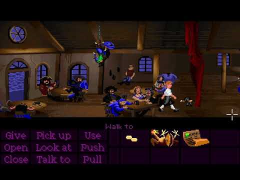
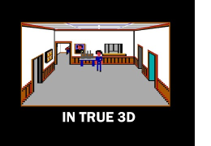
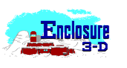
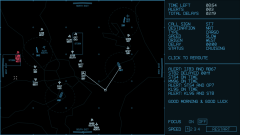
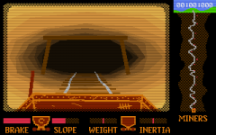
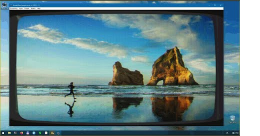

mausimus
retro coder
itchio (at) mausimus.net
twitter github itch.io YouTube ko-fi
Tech Demos
Scumm Bar 3D
Scumm Bar 3D playable in ScummVM with RVX mod prototype, using voxel projection mapping. Collaboration with FOA_SE. VGA and EGA versions.
YouTube (VGA) twitter (VGA) YouTube (EGA) twitter (EGA)AGI 3D
Sierra-style AGI graphics but in 3D, voxels w/ custom renderer.
YouTube twitterGames
Enclosure 3-D
Sierra-style AGI adventure game by Femo Duo Entertainment remastered in 3D. Full game, free to play, cross-platform.
itch.io YouTube twitterAIROBICS

It's time for your annual retraining as an air traffic controller. Can you still handle the pressure?
Mini-game made in 48 hrs for Ludum Dare 49 game jam, taking 23rd place.
Open source.
Miner Rescue

Ride a mining cart downhill... in the dark!
Mini-game made in 48 hrs for Ludum Dare 48 game jam, 8th place in graphics.
Open source.
Tools
Shader Glass

Overlay for running GPU shaders on top of Windows desktop.
Open source.
Others
- rtdoom - Doom-style graphics engine in modern C++
- rvcc - Standalone C compiler for RISC-V and ARM
- atre - 8-bit Atari XL/XE platform emulator
- raycaster - Wolfenstein 3D-style raycasting on Arduino
- scummvm-speech - Playing ScummVM with speech recognition